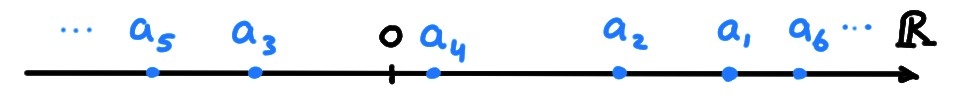
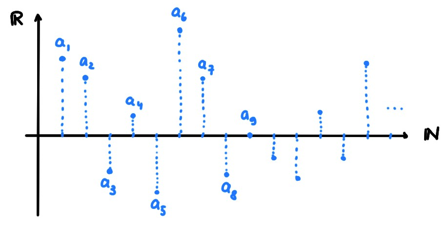
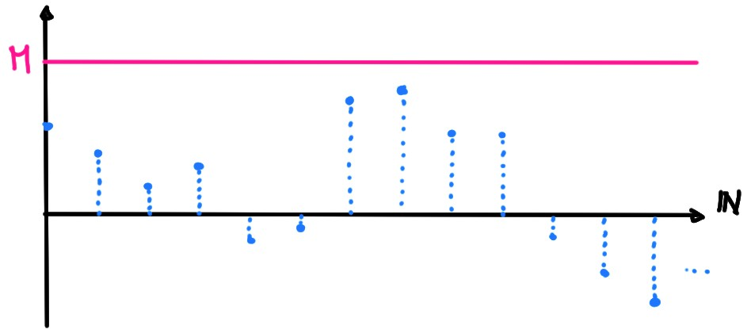
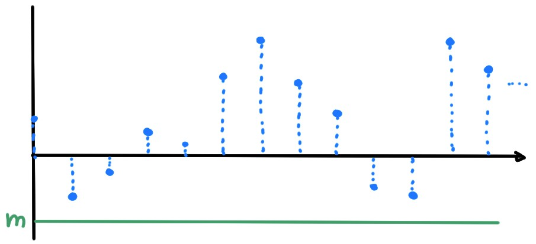
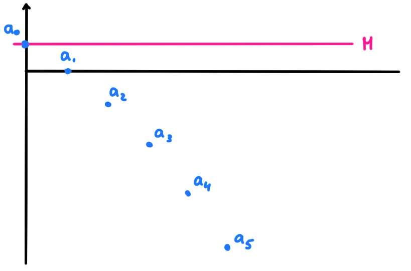
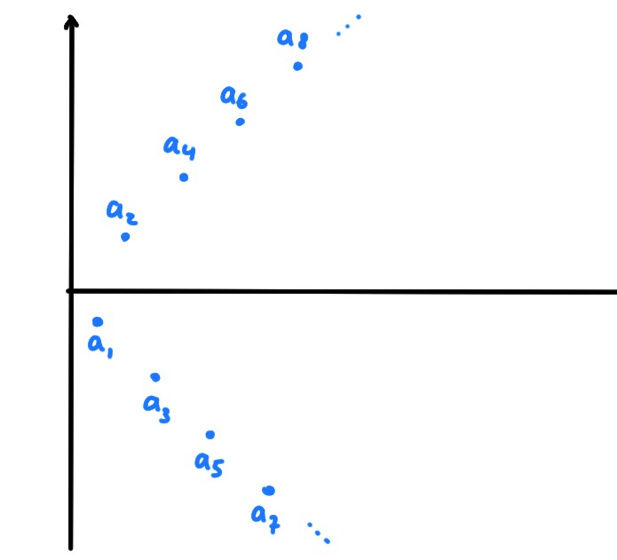

Les suites sont un des objets les plus étudiés en analyse, nous les
utiliserons constamment dans la suite.
Dans ce chapitre, on discutera pour la première fois
en détails de la notion de limite.
Si le lecteur s'intéresse à être introduit à certaines de
ces difficultés, de manière
informelle, en évitant le langage mathématique (qui est souvent responsable du
blocage des novices), il pourra consulter le texte suivant:
[PDF: Le marchand de billes].
Une suite \((a_n)_{n\geqslant n_0}\)
est une famille infinie ordonnée de réels, indexée par des entiers:
\[a_{n_0},a_{n_0+1},a_{n_0+2},\dots\]
Souvent, la suite commencera par l'indice \(n_0=0\) ou \(n_0=1\),
mais \(n_0\) peut a priori être quelconque.
Quand le premier indice n'importe pas ou peu, on écrira simplement \((a_n)\) au
lieu de \((a_n)_{n\geqslant n_0}\).
Le plus souvent, on s'intéressera aux propriétés
asymptotiques des suites, c'est-à-dire aux propriétés qui ne dépendent
pas d'un nombre fini d'indices \(n\)!
Représentations
On peut visualiser une suite \((a_n)_{n\geqslant 1}\)
soit comme un nuage de points sur la droite,

soit en considérons
les paires de points \((n,a_n)\) dans le plan cartésien,

Cette dernière est équivalente à représenter le graphe de la fonction
\[\begin{aligned}
f:\mathbb{N}^*&\to\mathbb{R}\\
n&\mapsto f(n):= a_n\,.
\end{aligned}\]
Une suite peut contenir une quantité infinie d'information, et
constitue donc un objet a priori difficile à étudier. Commençons donc par
distinguer quelques types particuliers de suites, dont l'étude sera plus simple
que celle des suites quelconques.
Une propriété simplificatrice, pour une suite, est que ses termes ne soient
globalement pas trop grands:
Une suite \((a_n)\) est
majorée si il existe une constante \(M\) telle que
\(a_n\leqslant M\) pour tout \(n\),

minorée si il existe une constante \(m\) telle que
\(a_n\geqslant m\) pour tout \(n\),

bornée si elle est à la fois majorée et minorée.
Une suite bornée est une suite qui ''vit'' dans un intervalle, dans le sens où
on peut trouver deux nombres finis \(m\lt M\) tels que
\[a_n\in [m, M]\quad \forall n\,.\]
La suite \(a_n=1-n^2\) (\(n\geqslant 0\)) est majorée. En effet, on a
\[a_n=1-n^2\leqslant 1-0^2=1\,,\qquad \forall n\geqslant 0\,.\]
et donc en prenant \(M=1\), alors \(a_n\leqslant M\) pour tout \(n\).

Par contre, \(a_n\) n'est pas minorée. Pour vérifier cette
affirmation, montrons que pour toute constante \(m\), il existe au moins un
indice \(n\) tel que \(a_n\lt m\). Ceci est vrai lorsque \(m\geqslant 0\) puisque
\(a_n\leqslant 0\) dès que \(n\geqslant 1\). Si maintenant \(m\lt0\), alors
\(a_n=1-n^2\lt m\) si et seulement si \(n\gt\sqrt{1-m}\) (on a simplement résolu
l'inéquation). Donc en prenant
\(n\) plus grand que l'entier \([\sqrt{1-m}]+1\), on a bien que \(a_n\lt m\).
Considérons
la suite \(a_n:= n\)ème chiffre de l'expansion décimale de \(\pi\) en
base \(10\). Comme
\[ \pi=3.1415926535897\dots\,, \]
on a \(a_1=1,a_2=4,a_3=1,a_4=5,a_5=9,\dots\)
Cette suite (très difficile à étudier!)
est bornée, car minorée par \(0\), et majorée par \(9\).
La suite \(a_n=(-1)^nn\) n'est pas majorée.
En effet, fixons un seuil \(M\gt 0\)
(sous-entendu: aussi grand que l'on veut), et prenons un entier pair \(n=2k\)
quelconque, tel que \(k\gt M/2\). On a alors
\[ a_n=a_{2k}=(-1)^{2k}2k=2k\gt M\,.\]

Cette suite n'est pas minorée non plus.
En effet, fixons un seuil \(M<0\)
(sous-entendu: aussi grand que l'on veut, négatif),
et prenons un entier impair \(n=2k+1\)
quelconque, tel que \(k\gt -(M-1)/2\). On a alors
\[ a_n=a_{2k+1}=(-1)^{2k+1}(2k+1)=-(2k+1)\lt M\,.\]
Suites monotones
Une suite \((a_n)\) est
croissante si \(a_n\leqslant a_{n+1}\) pour tout \(n\),
strictement croissante si \(a_n\lt a_{n+1}\) pour tout \(n\),
décroissante si \(a_n\geqslant a_{n+1}\) pour tout \(n\),
strictement décroissante si \(a_n\gt a_{n+1}\) pour tout \(n\).
Si \((a_n)\) satisfait une de ces propriétés, elle est dite monotone.
La suite \(a_n=n^2\), \(n\geqslant 0\), est strictement croissante puisque
\[
a_{n+1}=(n+1)^2=n^2+\underbrace{2n+1}_{\gt 0}\gt n^2=a_n\,.
\]
La suite harmonique
\(a_n=\frac{1}{n}\), \(n\geqslant 1\), est strictement
décroissante puisque \[ a_{n+1}=\frac{1}{n+1}\lt \frac1n=a_n \]
La suite \(a_n=\frac{n}{n+1}\) est strictement croissante puisque
\[
a_n=\frac{n}{n+1}=\frac{(n+1)-1}{n+1}=1-\frac{1}{n+1}\,,
\]
ce qui permet d'écrire
\[
a_{n+1}=1-\frac{1}{n+2}\gt 1-\frac{1}{n+1}=a_n\,.
\]
Vrai ou faux?
[ ] Si \(\ln(a_n)\leqslant 10^{10^{10}}\) pour tout \(n\), alors \(a_n\) est majorée.
[ ] Si il existe une constante \(m\gt 0\) telle que \(a_n\geqslant -\frac{1}{m}\)
pour tout \(n\), alors \(a_n\) est minorée.
[ ] Si \(a_n\) est majorée, alors il existe une constante \(M\gt 0\) telle
que \(a_n\leqslant \frac{M}{5}\) pour tout \(n\).
[ ] Si \(a_n\) est bornée, alors il existe une constante \(C\gt 0\) telle
que \(-\frac{C}{17}\lt a_n\lt \frac{C}{11}\) pour tout \(n\).
[ ] Si \(a_n\) est bornée, alors il existe deux constantes, \(C_-\lt 0\) et
\(C_+\gt 0\) telles
que \(C_-\leqslant a_n \leqslant C_+\) pour tout \(n\).